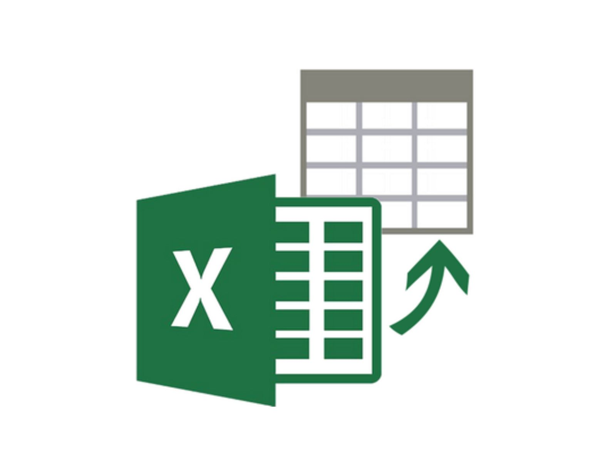

01/02/23
HTML clase 1
El Lenguaje de Marcado de Hipertexto (HTML) es el código que se utiliza para estructurar y
desplegar una página web y sus contenidos. Aprendimos las etiquetas básicas para empezar una
página como "strong" que remarca el texto en negrita, y también la etiqueta
<p> para crear otro párrafo. También empezamos nuestra primera página llamada
Bitácora.

02/02/23
HTML clase 2
El día de hoy aprendimos a utilizar Github y la manera para subir los códigos a un repositorio ya que
github nos va ayudar mas adelente con
proyectos

07/02/23
HTML clase 3
El día de hoy el profesor nos explicó lo que es CSS, una capa de personalización para HTML, y también nos
retó a decorar
sin utilizar CSS y JavaScript

08/02/23
HTML clase 4
El día de hoy el profe nos dio una leccion de Css para empezar con la customizacion de la pagina web nos
enseño a como
conectar el archivo css con html a demas de cambiar las fuentes.

15/02/23
HTML clase 5
El día de hoy el profe selecciono codigos de manera aleatoria
para revisarlos y al profe la mayoria no les agrado, ademas recalco
la restriccion de usar JavaScript

20/02/23
HTML clase 6
El día de hoy el profe nos dijo que le vayos
aventajado ala pantalla de login ya que la ivamos a utilizar mas adelante
ademas que descubri que a gerardo no le gustan las focas
23/02/23
HTML clase 7
Hoy el profe nos pidio una nueva pagina para el registro no le voy amentir a nadie lo saque
de un video de youtube pero lo adapte al entorno sin JavaScript

27/02/23
HTML clase 8
El día de hoy el profe nos pregunto cosas "basicas" de lo que
viene ciendo lo que el nos enseño a demas de pedirnos una nueva pantalla
para la recuperacion de contraseñas

1/03/23
HTML clase 9
El día de hoy el profe nos pidio el menu de
la pantaña principal ademas de que se entrega hoy antes de las dos.

06/03/23-10/03/23
PHP semana 1
En esta semana el profesor nos enseño que es php y para que funcioes se pueden utilizar a
demas de pasarnos un pequeño codigo que se conectaba a nestra base de datos sql y a como
correrlo con xamp en un localhost ya que php se utiliza mas que nada para sitios en la nube.

13/03/23-17/03/23
PHP semana 2
En esta semana el profe nos puso a trabajar en los equipos que ya habiamos establecido
y nos puso a seleccionar el mejor trabajo para usarlo de base y ademas el registro ya tenia
que registrar ademas que nos puso como limitante no usar javascript para nada.
20/03/23-31/03/23
PHP semana 3 y 4
En estas semanas nos llamaro la atencion ya que funcionaba nuestro codigo mas no tenia diseño y
ademas no funcionaba el login y puse a mi equipo de back-end a trabajar y mientras tanto mi
scrum master me comento que lo teniamos que subir a la nube mas no me dijo en cual hosting a si que
investigando siento que 000webhost rs el mejor hosting que encontre mas que nada por su organisacion
de carpetas y facilidad de entendar a demas de ser gratuito.

3/04/23-7/04/23
PHP semana 5
En esta semana nos volvieron a llamar la atencion lo bueno es que a Back-end no nos dijieron nada
y nos puso a aser una carga masiva de datos importando un archivo .scv que esun formato de exel
delimitado por comas ademas que en la base de datos se guardaran imagenes y que el menu ya mostrara esas
imagenes a demas de implementar un diseño nuevo que nos mando Front-end ademas de crear validaciones
y corregir errores menores
